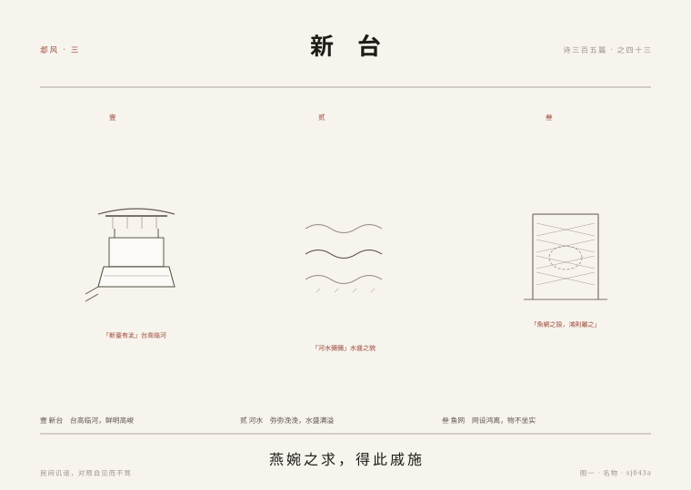
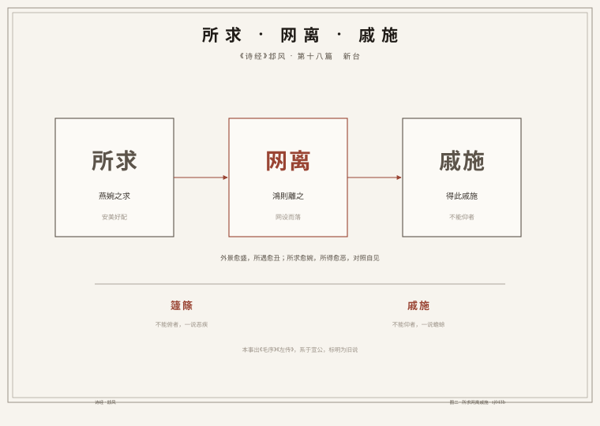

第四十三篇 新台
邶风 · 之三 SJ043
朗读 · 普通话
依经文正文朗读，句读从文；不配乐、不改速、不加拖腔。全库同一音色（豆包 TTS），非播音员录制。
一 解题
诗三判：
- 谁在说：卫地民间之人，旁观者的声口。诗中不指名宣公，只借「所求」与「所得」两相对照，唱出讥谣。
- 说什么事：新台高鲜明亮，河水满盛。本想求得燕婉好配，谁知配来的是个籧篨——不能俯身、不善不洁之人。高台再筑，河水再盛；鱼网设下，落网的说是鸿，所求燕婉，所得却是戚施——不能仰视之人。
- 为何编在此：前八篇多写室家之怨、征役之思，此篇转入国事之刺；邶风「礼失」一层，由室内服色推到国君大恶。讥而不骂，句句近谣。
《毛序》：「《新台》，刺卫宣公也。纳伋之妻，作新台于河上而要之。国人恶之，而作是诗也。」——以为宣公纳子之妻，国人恶而刺之。
朱子《诗集传》：「旧说以为卫宣公为其子伋取于齐，而闻其美，欲自取之，乃作新台于河上以要之。齐女之来，遂留而妻焉。国人恶之，而作此诗。」——朱子亦从旧说，而标明「旧说」。
本库的看法：这首诗的骨在「籧篨不鲜」——刺而近于谣，取民间讥刺之声口，不作道德审判。
本事（为子娶齐女而自娶、筑台河上）出《毛序》《左传》，标明为旧说；诗本身只把「所求」与「所得」两相对照，外景愈盛，所遇愈丑。全篇不著一「刺」字。
二 经文
第一章
新臺有泚，河水彌彌。燕婉之求，籧篨不鮮。
第二章
新臺有洒，河水浼浼。燕婉之求，籧篨不殄。
第三章
魚網之設，鴻則離之。燕婉之求，得此戚施。
分章：毛传、朱子皆三章，章四句。一、二章台与水对写，三章网与虫譬；章法由外景落向其人，一章一折。
三 韵读
| 一 |
泚、彌、鮮 |
脂部／元部 |
| 二 |
洒、浼、殄 |
元部／文部 |
| 三 |
離、施 |
歌部 |
一章脂、元开合相协，近口语谣唱；二章元、文收束；三章歌部舒长，落到「戚施」。全篇落脚声是「得此戚施」——所求燕婉，所得丑疾。
四 字义与名物
- 新臺——台名，筑于河上。臺，高台。
- 泚（cǐ）——鲜明之貌。不是「泚汗」之泚。
- 彌彌（mí mí）——水盛满之貌。
- 燕婉——安和美好，指所求之好配偶。燕，安；婉，顺。
- 籧篨（qú
chú）——竹席；毛传以喻「不能俯者」（身不能俯之人），一说恶疾（佝偻丑疾）。
- 鮮——善、鲜洁。不鮮＝不善、不洁；不是「不新鲜」。
- 洒（cuǐ／xiǎn）——高峻鲜亮之貌。
- 浼浼（měi měi）——水盛之貌。
- 殄（tiǎn）——通「腆」，善、厚；不殄即不善、不美。一说殄为绝。
- 魚網之設——布下鱼网。设，置。
- 鴻——蛤蟆（蟾蜍）一说；鸿雁一说。两说并列，不取一尊。
- 離——通「罹」，遭遇、附着落网。不是「离开」。
- 戚施（qī
shī）——不能仰者（身不能仰）；一说蟾蜍，一说丑疾驼背之人。
五 今译
第一章
新台鲜明高耸，河水满满荡荡。本想求得燕婉好配，却嫁来个籧篨，不善不洁。
第二章
新台高峻鲜亮，河水漫漫荡荡。本想求得燕婉好配，却配来个籧篨，不厚不美。
第三章
鱼网已经布下，落网的说是鸿（一说蛤蟆）。本想求得燕婉好配，得到的却是这戚施。
译注：「泚」译鲜明；「弥弥」译水盛满；「燕婉」译安美好的好配；「籧篨」从不能俯者之喻；「鲜」「殄」皆善厚；「离」读「罹」，落网遭遇；「戚施」从不能仰者之喻。
六 章旨
一章：台明水盛，所求不鲜。外景鲜亮，所遇已丑。
二章：台峻水漫，所求不殄。再申一层，不善不美。
三章：网设鸿离，所得戚施。以网鱼为譬，落到其人。
三章皆以「燕婉之求」折到反面：外景愈盛，所遇愈丑；所求愈婉，所得愈恶。
此即民间讥谣的章法——不骂一句，而对照自见。
七 诗教
- 赋：前二章直登台河水盛之景；三章以网鸿为比，赋而兼比。
- 观：可观一「刺」。台高水盛而人恶，观礼失于上而民口不平；风诗之刺，多在物情对照里见。
- 群：国人共恶之，声口是众口相传的谣，非一人私怨；此「群」是民间同口。
- 怨：怨在婚配颠倒、所嫁非人；怨托于物喻，不指名、不怒骂。
八 分寸与边界
- 不可把「不鲜」解作「不新鲜」。鲜为善、洁；不鲜是不善不洁。
- 不可把「籧篨」直认作竹席一物而弃其喻义。本义竹席，毛传借喻不能俯者，一说恶疾。
- 不可把「鸿」坐实为鸿雁。鸿一说蛤蟆、一说鸿雁，两说并列，不取一尊。
- 不可把「离」解作「离开」。离通「罹」，遭遇、附着落网。
- 不可把此篇读作道德审判之文。诗是民间讥刺之声口，所求与所得对举而已；本事系于宣公，属旧说，不据诗坐实。
九 存疑
- 本事所系：毛序、《左传》系于卫宣公纳伋之妻；朱子从旧说。本库标明为旧说，诗内无证者不坐实其人。
- 「鸿」为何物：一说蟾蜍（蛤蟆），一说鸿雁。本库两存，不裁。
- 「籧篨」「戚施」所指：毛传以为人之不能俯、不能仰（体态之疾）；一说皆蟾蜍丑疾；一说喻口柔、面柔之人。本库从不能俯／不能仰，存蟾蜍一说。
- 「殄」字：通「腆」为善厚，一说「殄，绝」。本库从善。
- 诗中人物口吻：一说齐女自诉所嫁非人，一说国人旁观代叹。本库取旁观者声口。
十 跨典
- 《左传·桓公十六年》：卫宣公烝夷姜，生伋；为伋取齐女，宣公悦而自娶，是为宣姜——毛序「纳伋之妻」所系本事，可参此篇所刺之由。
- 《史记·卫康叔世家》：载宣公太子伋与宣姜、寿、朔之事，与《左传》互见；本事史迹以此二书为据。
- 《鄘风·墙有茨》：「中冓之言，不可道也」，同刺宣姜宫闱之事；一在邶，一在鄘，同为卫地之诗，可并读。
- 《鄘风·君子偕老》：刺宣姜之诗，与此篇并见卫事在国风两出；一讥台上网离，一美服而刺德。
- 后世成语：「籧篨戚施」后世转为喻丑陋谄媚之人；其源出于此篇，语意已由体态之疾泛化为丑媚之称。
十一 双卡与图
双卡五对：
| 燕婉（安美好配） |
籧篨戚施（丑疾不能俯仰） |
| 泚／洒（台之鲜明高峻） |
彌彌／浼浼（水之盛满） |
| 鸿（鸿雁／蛤蟆两存） |
离（罹，落网） |
| 鲜／殄（善厚） |
不新鲜（误训） |
| 民间讥谣 |
道德审判 |

图一 · 新台·河水·鱼网鸿离 名物图

图二 · 所求—网离—戚施 义理图
读图三处：
- 台取三处特写：台基、顶栏楯、临河水岸；不画整座宫台，小尺度下全形必失真。
- 河水与鱼网：三道水纹写盛貌；鱼网挂岸，网中一物不坐实鸿雁或蛤蟆，存两说。
- 义理三格是一条折落：所求燕婉—网设鸿离—得此戚施，箭头由愿入失；两尺标出「籧篨」「戚施」，见对照自见而不骂。